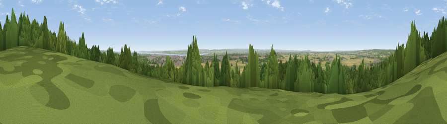

Viewpoint near Horndon On The Hill
#26622 in England · top 26% of its area beats it · near Horndon On The HillThe view, rendered

A 360° render of this exact spot computed from the terrain model, tree cover and land cover — summer colours, afternoon light, calibrated against photographs of famous viewpoints. Real trees, hedges and buildings will differ in detail.
The panorama
Grey silhouette: terrain skyline in each direction (720 bearings, Earth curvature and refraction included). Dashed green: skyline with trees (+15 m) and buildings (+8 m) as obstacles. Blue strip: how far the ground is visible on each bearing.
Where the view opens
Wedge length = distance to the farthest visible ground on that bearing (vegetation-aware). Rings at 10, 25 and 50 km.
What fills the view
33% woodland · 31% grassland · 27% cropland · 7% built-up · 2% water
Angular shares of the visible panorama (visual magnitude), not map area. Landscape diversity 0.59 (0–1 Shannon).
Key numbers
More beautiful places nearby
The staircase of upgrades: each row has a higher view potential than everything closer. Driving times are estimates from straight-line distance, calibrated against real road routing — check an actual route before setting out.
| Place | Direction | Drive | Score |
|---|---|---|---|
| Viewpoint near Horndon On The Hill | WSW · 1 km | ~2 min | 58.8 |
| Viewpoint near South Benfleet | E · 11 km | ~21 min | 62.9 |
| Viewpoint near Birling | S · 24 km | ~39 min | 65.2 |
| Viewpoint near Wrotham | SSW · 27 km | ~43 min | 66.6 |
| Viewpoint near Boxley | SSE · 27 km | ~44 min | 68.6 |
| Viewpoint near Shipbourne | SSW · 35 km | ~53 min | 69.1 |
| Viewpoint near Westwell | SE · 49 km | ~69 min | 72.2 |
| Viewpoint near Lympne | SE · 66 km | ~89 min | 72.6 |
51.54864, 0.41762 · source: screening · position refined by local search. Computed location — check access rights before visiting.